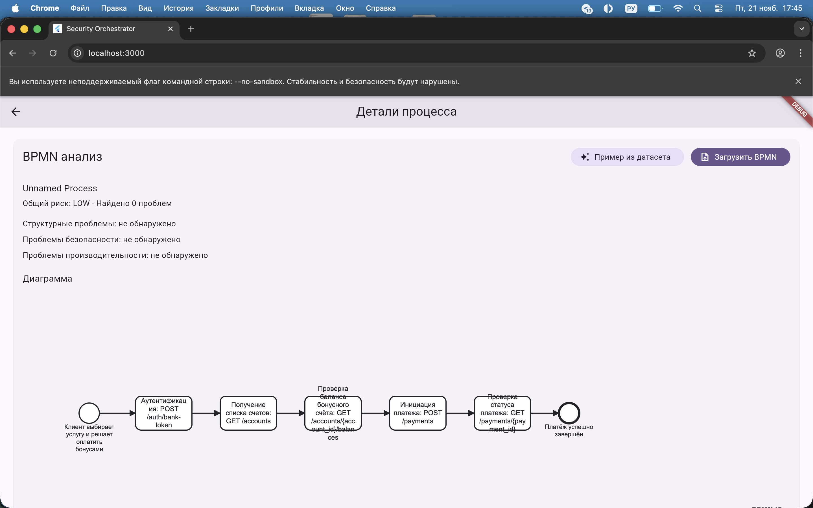
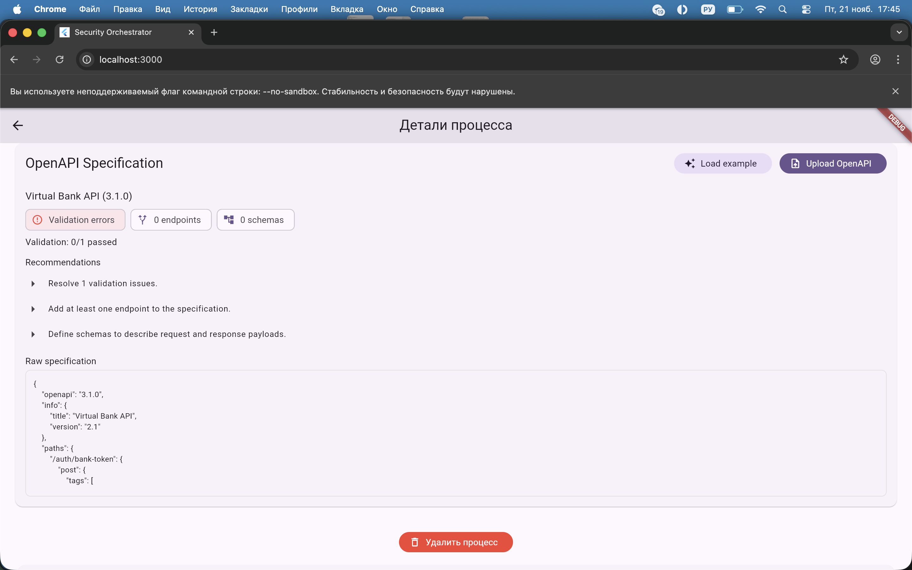
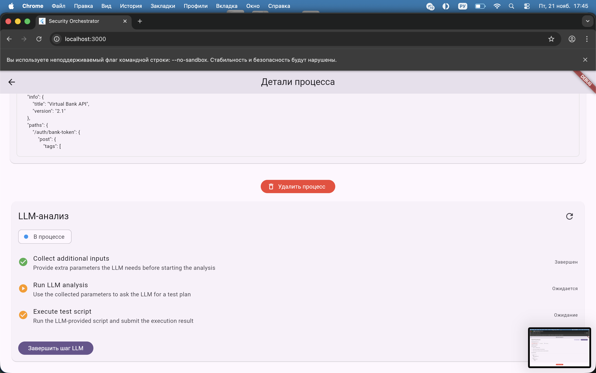

SecurityOrchestrator
Платформа оркестрации и анализа безопасности API
- Единая платформа для BPMN‑процессов, OpenAPI и AI‑тестов
- Java backend с feature‑first архитектурой + Flutter‑клиент
- Фокус на онлайн‑демо Swagger/OpenAPI Security Analysis
Проблема, на которую отвечаем
- Ручное и фрагментированное тестирование безопасности API и бизнес‑процессов
- Swagger‑спецификации есть, но не дают простой оценки «насколько безопасен API?»
- Разрозненные инструменты, нет единого сценария и единой картины рисков
- Команде трудно быстро показать бизнесу понятный, визуальный отчёт по безопасности
Архитектура платформы SecurityOrchestrator
graph TB
subgraph "Flutter Frontend"
FE[Flutter App
Feature-first архитектура]
end
subgraph "Java Backend (Feature Modules)"
BPMN[BPMN Processing Feature]
OPENAPI[OpenAPI / API Security Feature]
LLM[LLM & AI Test Data]
ORCH[Workflow Orchestration]
MON[Monitoring & Reporting]
CORE[Shared Core & Cross-cutting]
end
subgraph "Python Microservices"
API_ANALYSIS[api-analysis-service
Swagger/OpenAPI Analysis]
VULN_API[vulnerable-api-service
демо-API с уязвимостями]
end
subgraph "Target Systems & Models"
TARGETS[Test Targets]
MODELS[Local AI Models]
end
FE --> OPENAPI
FE --> BPMN
FE --> ORCH
OPENAPI --> API_ANALYSIS
API_ANALYSIS --> VULN_API
OPENAPI --> CORE
BPMN --> CORE
LLM --> CORE
ORCH --> CORE
MON --> CORE
OPENAPI --> TARGETS
BPMN --> TARGETS
LLM --> MODELS
style OPENAPI fill:#f3e5f5
style BPMN fill:#e1f5fe
style LLM fill:#fff3e0
style ORCH fill:#e8f5e8
style MON fill:#fce4ec
style API_ANALYSIS fill:#f3e5f5
style VULN_API fill:#ffe6cc
Swagger/OpenAPI Security Analysis в контексте
graph TB
subgraph "Flutter App"
UI[API Analysis Feature
ApiAnalysisCard]
end
subgraph "Backend services"
API_ANALYSIS[api-analysis-service
FastAPI, порт 8001]
VULN_API[vulnerable-api-service
FastAPI, порт 8003]
end
subgraph "AI & Shared Utilities"
OPENROUTER[OpenRouter LLM API]
COMMON[security_orchestrator_common
shared utilities]
end
UI --> API_ANALYSIS
API_ANALYSIS --> VULN_API
API_ANALYSIS --> OPENROUTER
API_ANALYSIS --> COMMON
style API_ANALYSIS fill:#f3e5f5
style VULN_API fill:#ffe6cc
style OPENROUTER fill:#e1f5fe
style COMMON fill:#e8f5e8
Путь пользователя: от URL до отчёта
sequenceDiagram
participant User as User (QA/Sec)
participant FE as Flutter App
participant API as api-analysis-service
participant VULN as vulnerable-api-service
participant LLM as OpenRouter LLM
User->>FE: Ввод swagger_url уязвимого API
FE->>API: POST /swagger-analysis/analyze
API->>VULN: GET /openapi.json
VULN-->>API: OpenAPI спецификация
API->>API: OpenAPIParser — разбор и валидация
API->>LLM: analyze_api_security(openapi_spec)
LLM-->>API: Детальный AI‑отчёт
API-->>FE: Security score, issues, рекомендации
FE-->>User: Визуальный отчёт по безопасности API
Внутренняя архитектура api-analysis-service
graph TD
subgraph "api-analysis-service"
subgraph "api/"
ROUTES[routes/swagger_analysis_routes.py]
MODELS[models/swagger_analysis_models.py]
end
subgraph "services/"
PARSER[OpenAPIParser
openapi_parser.py]
ANALYSIS[OpenAPIAnalysisService
openapi_analysis_service.py]
AI_ANALYZER[AISecurityAnalyzer
ai_security_analyzer.py]
end
subgraph "core/"
CONFIG[config.py
env, OpenRouter key]
LOGGING[SECURITY_SETUP.md
logging & settings]
end
end
ROUTES --> MODELS
ROUTES --> ANALYSIS
ANALYSIS --> PARSER
ANALYSIS --> AI_ANALYZER
ANALYSIS --> CONFIG
style ROUTES fill:#e1f5fe
style ANALYSIS fill:#f3e5f5
style PARSER fill:#fff3e0
style AI_ANALYZER fill:#fce4ec
Ключевая логика анализа спецификации
- OpenAPIParser — загрузка и разбор JSON/YAML по swagger_url
- Валидация структуры OpenAPI, извлечение эндпойнтов, методов, схем и security‑схем
- Подсчёт статистики: всего, защищённых, незащищённых, deprecated эндпойнтов
- Формирование нормализованного представления API для последующего AI‑анализа
AI‑анализ безопасности через OpenRouter
- OpenRouterClient.analyze_api_security получает текст спецификации
- Используемая модель (например, anthropic/claude-3.5-sonnet) оценивает:
- — аутентификацию и авторизацию, экспозицию данных, валидацию входных данных
- — конфигурационные проблемы: HTTP, rate limiting, debug‑эндпойнты и т.п.
- Результат: security_score 0–100, список issues и детальные рекомендации
Интеграция с Flutter‑клиентом
- Фича lib/features/api_analysis/ с разделением на domain/data/presentation
- ApiAnalysisRepositoryImpl и remote datasource для вызова сервиса
- ApiAnalysisEntity отражает SwaggerAnalysisResponse бэкенда
- ApiAnalysisCard показывает score, проблемы, рекомендации и статистику API
Ценность решения и зрелость
- Автоматический, воспроизводимый анализ Swagger/OpenAPI спецификаций с AI‑подсказками
- Прозрачный security score и понятные отчёты для команды и бизнеса
- Интеграция с существующей платформой SecurityOrchestrator и BPMN‑оркестрацией
- Бэкенд переведён на feature‑first архитектуру, выделены отдельные Python‑сервисы
Интерфейс: главный экран
Общий обзор приложения SecurityOrchestrator

Интерфейс: модуль API Analysis
Ввод URL, запуск анализа и статус выполнения

Оркестрация BPMN
BPMN описывает шаги бизнес-процесса и координирует вызовы

- — Компоновка, переходы и правила принимаются из BPMN-диаграммы
- — Каждый шаг запускает HTTP-акции и передаёт контекст в аналитические сервисы
OpenAPI спецификации
Контракты описывают структуры запросов/ответов для генерации тестов

- — Автоматическое извлечение URL, методов, параметров и схем
- — На базе спецификации формируются HTTP-запросы и ожидаемые ответы
Тестирование HTTP-запросов
Результаты выполнения шагов и LLM-интерпретация ответов

- — Серия запросов прогоняется прямо в контексте BPMN и OpenAPI
- — В UI отображаются статусы, длительность и тело ответов
Результаты анализа API (1/3)
Общая оценка безопасности и краткий итог

Результаты анализа API (2/3)
Детализация найденных проблем и уровни критичности

Результаты анализа и планы
Что сделали к полуфиналу и что доделаем к финалу

- К полуфиналу сделано:
- — Реализован сервис api-analysis-service и интеграция с OpenRouter
- — Поднято уязвимое демо‑API и настроен полный цикл анализа по Swagger URL
- — Интеграция с Flutter‑клиентом и визуализация security score и отчётов
- — Внедрена работа с BPMN и OpenAPI, бизнес-процессы тестируем через сгенерированные HTTP-запросы
- — Добавлена локализация интерфейса анализа процессов: формы, статусы, кнопки и карточки результатов теперь на русском
- До финала планируем:
- — Добавить кастомные правила (OWASP, compliance‑чеки) и историю анализов
- — Реализовать отчёты (PDF/HTML) и хранение результатов в платформе
- — Глубже связать Swagger‑анализ с BPMN‑оркестрацией и общим risk‑score процессов